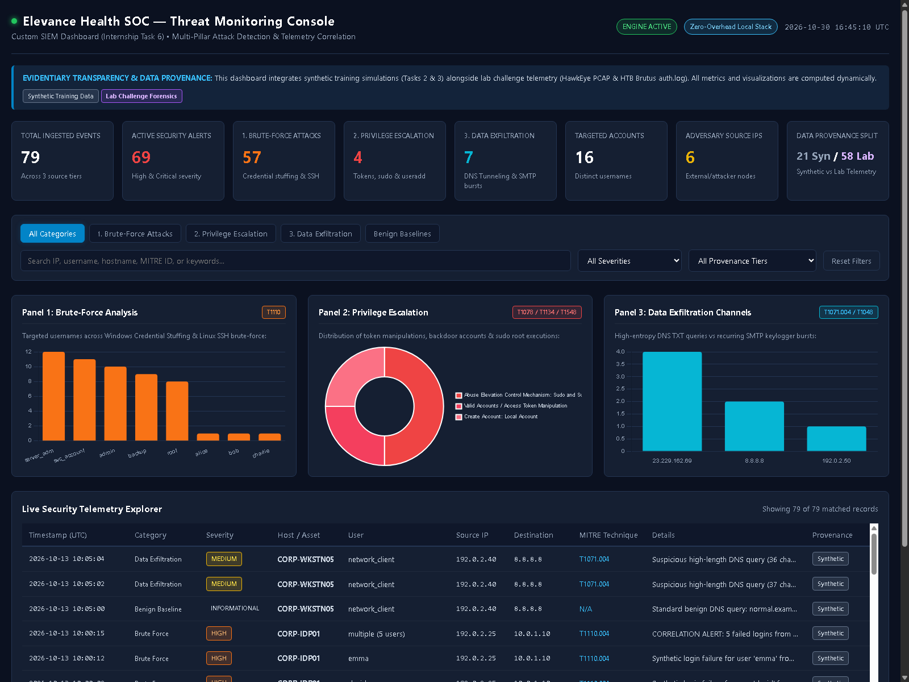
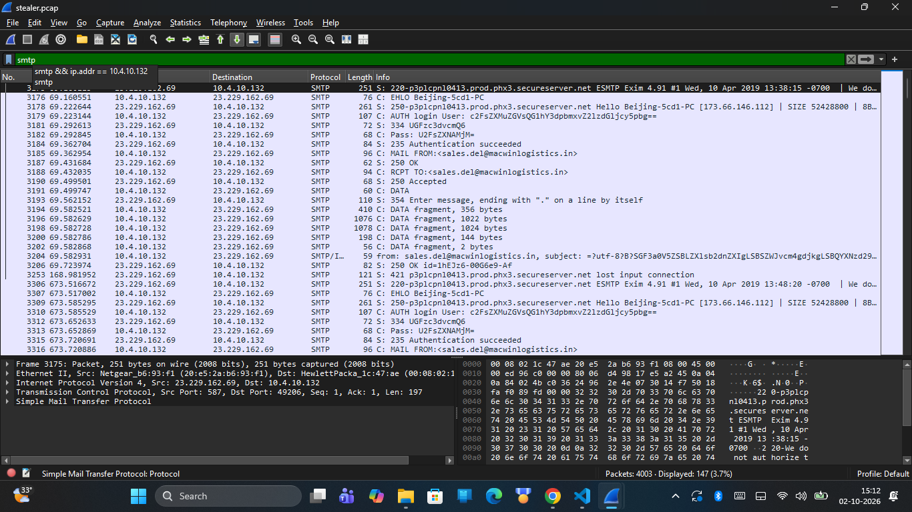
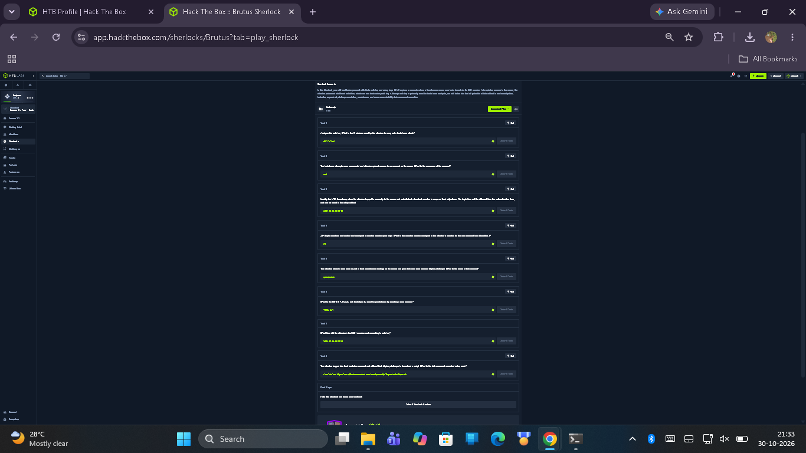

Engineering & Hardware Transparency Disclosure
This public portfolio reflects defensive engineering developed on a resource-constrained workstation (Windows 11, 7.67 GB RAM). Heavy enterprise clusters (live Elasticsearch/Kibana or Security Onion) were not deployed as running background services. The work instead uses standardized offline specifications (Kibana 8.x NDJSON, TheHive 5 case templates, MISP RFC JSON) and a zero-dependency local Python verification server (< 30 MB RAM). Synthetic training logs are distinguished from genuine challenge forensic artifacts.
Primary Documentation
Core consolidated academic reports and portfolio navigation guides.
Consolidated Internship Report
Comprehensive 9-section academic report detailing activities across all six tasks and explaining their foundational connection to AI, Data Science, Computer Networks, Operating Systems, and Cybersecurity.
Project Master README
Full architectural documentation, directory layout, cryptographic evidence integrity tables, and detailed methodology for all six technical assignments.
Public Release Audit
Sanitization verification report detailing excluded malware binaries, redacted lab credentials, and evidence provenance safeguards for open-source hosting.
Six Core Technical Tasks
Detailed investigation reports across the defensive cybersecurity lifecycle.
HawkEye Red, Blue & Purple Team Analysis
Tri-team evaluation of the HawkEye keylogger intrusion lifecycle: offensive attack chain simulation, defensive detection mapping, and integrated Purple Team mitigation handovers.
Custom SIEM Correlation Rules
Lab-developed detection and correlation rules for Credential Stuffing (T1110.004), DNS Tunneling (T1071.004), and Obfuscated PowerShell (T1059.001), documented in Sigma, Elastic DSL, and ElastAlert formats.
Multi-Stage APT Incident Response
End-to-end APT attack simulation and response following NIST SP 800-61. Features standardized TheHive 5 case templates, MISP threat-sharing candidate events, and a Python SIEM detection test harness.
CyberDefenders HawkEye Investigation
Deep packet analysis of a 4,003-packet PCAP: carved PE executable, decoded public IP discovery via bot.whatismyipaddress.com, verified seven recurring 10-minute SMTP exfiltration cycles, and solved all 24 questions.
HTB Brutus SSH Forensics
Host intrusion analysis across Linux auth.log and binary wtmp. Identified 48 dictionary attempts from 65.2.161.68, compromised root Session 37, backdoor user cyberjunkie, and sudo curl persistence staging (8/8 solved).
Custom 3-Pillar SIEM Dashboard
Centralized attack visualization tracking Brute-Force, Privilege Escalation, and Exfiltration across 79 ECS-normalized events. Includes Kibana 8.x NDJSON export, zero-dependency Python server, and verified UI.
Verified Evidence Gallery
Selected visual artifacts and forensic proof captured during lab verifications.



Academic Coursework & Skills Applied
Bridging Bachelor of Technology in AI & Data Science with SOC operations.
Computer Networks
- TCP three-way handshake & stream reassembly
- DNS protocol analysis & tunneling detection
- SMTP submission protocol state machine (port 587)
- Wireshark packet dissection & payload carving
Operating Systems & Systems
- Linux PAM logging subsystem (/var/log/auth.log)
- Binary C struct utmp parsing from /var/log/wtmp
- systemd-logind session lifecycle & TTY allocation
- Windows PE binary headers & privilege tokens
Data Science & Analytics
- Shannon entropy calculation for payload anomalies
- Sliding-window aggregation for credential stuffing
- Log normalization to Elastic Common Schema (ECS)
- JSON Lines (JSONL) data pipeline engineering
Cybersecurity Operations
- NIST SP 800-61 Incident Handling Lifecycle
- MITRE ATT&CK Enterprise Matrix mapping
- Sigma & Elastic DSL detection rule engineering
- TheHive 5 SOAR workflows & MISP threat sharing